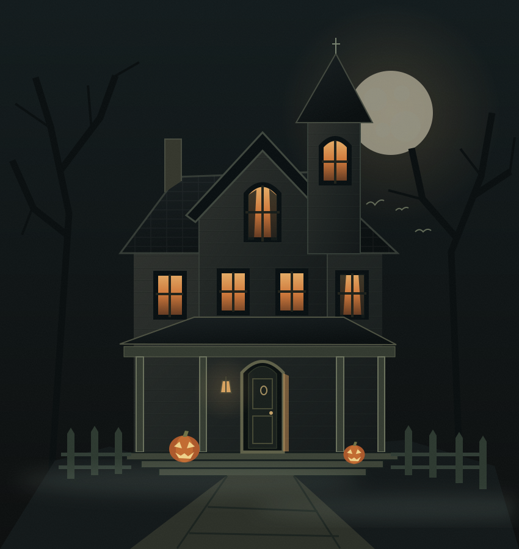

ALLE 21:21 · CI SI VEDE DENTRO
La convocazione
Il posto è Casa di Domenik. Il ritardo è un ottimo modo per fare un ingresso sospetto.
Un film horror. Gli amici giusti. E una sorpresa schifosa che sarebbe meglio non immaginare.
ALL’INIZIO DELL’INCUBO MANCANO
Nessun dress code. Qualche pessima intenzione.

Porta il coraggio.
Lo stomaco vediamo.
Il posto è Casa di Domenik. Il ritardo è un ottimo modo per fare un ingresso sospetto.
Film horror. Commenti sottovoce. Qualcuno che dice «non fa paura» e poi non va in bagno da solo.
Il titolo resta nell’ombra.Ti diremmo di più, ma rovinerebbe tutto. Soprattutto la tua tranquillità.
Quattro buste. Nessuno spoiler.
Si aprono un giorno alla volta,
secondo l’ora italiana.
La casa si ricorda di te.
I tuoi progressi restano
su questo dispositivo.
Il segnale cambia ogni giorno.
Gira la manopola. Ascolta il silenzio.
Tieni premuto il simbolo. Sembra facile.
Anche entrare qui lo sembrava.
TIENI PREMUTO PER INIZIARE
Il coraggio va allenato.
Quattro coppie. Ricordale prima che la casa ricordi te.
Trova le coppie. Nessuna fretta. Forse.
Qualcosa è nascosto in piena vista.
Qualcos’altro aspetta un gesto preciso.
Film horror. Sorpresa schifosa. Ottima compagnia.